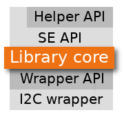

Library core APIs¶
These APIs are available if it is needed to add some custom tuning on the library behavior. For example, the Secure Element functions can be completely rewritten using the following APIs, if the way some of them are implemented doesn’t fit your needs.
#include <TO_cmd.h>
Data buffers¶
The following buffers are accessible.
-
unsigned char*
TO_command_data¶ Helper to access internal I/O buffer command data section, only valid before TO_send_command() call (even if an error occured while sending command).
-
unsigned char*
TO_response_data¶ Helper to access internal I/O buffer response data section, only valid after TO_send_command() call.
Command data preparation¶
The following functions are used to prepare data before sending command to TO.
-
int
TO_prepare_command_data(uint16_t offset, const unsigned char * data, uint16_t len)¶ Prepare command data.
Insert data into the internal I/O buffer at the specified offset.
- Parameters
offset: Buffer offset where to insert datadata: Data to be copied into the bufferlen: Data length
Warning: do not free data pointer parameter or overwrite data before having called TO_send_command(), or before aborted command with TO_reset_command_data().
- Return
- TO_OK on success TO_MEMORY_ERROR: data overflows internal I/O buffer, in this case internal command data buffers are invalidated (as if TO_reset_command_data() has been called).
-
int
TO_prepare_command_data_byte(uint16_t offset, const char byte)¶ Prepare command data byte.
Insert data byte into the internal I/O buffer at the specified offset.
- Parameters
offset: Buffer offset where to insert databyte: Data byte to be copied into the buffer
- Return
- TO_OK on success TO_MEMORY_ERROR: data byte overflows internal I/O buffer, in this case internal command data buffers are invalidated (as if TO_reset_command_data() has been called).
-
int
TO_set_command_data(uint16_t offset, const char byte, uint16_t len)¶ Set data range.
Set internal I/O buffer range bytes to a defined value.
- Parameters
offset: Buffer offset where to begin rangebyte: Value to be set for each byte in the rangelen: Range length
- Return
- TO_OK on success TO_MEMORY_ERROR: range overflows internal I/O buffer, in this case internal command data buffers are invalidated (as if TO_reset_command_data() has been called).
And to reset command context:
-
void
TO_reset_command_data(void)¶ Reset command data.
This function resets command data. It MUST be called if command data has been prepared without subsequent call to TO_send_command() (if command has been aborted for example).
Send command¶
The following function is used to send a command to TO, after Command data preparation.
-
int
TO_send_command(const uint16_t cmd, uint16_t cmd_data_len, uint16_t * resp_data_len, uint8_t * resp_status)¶ Send command to the Secure Element device.
Send a command to the Secure Element device and get response data. Internal command data buffers must be considered as invalidated after calling this function.
- Parameters
cmd: Command code (see TOCMD_* definitions)cmd_data_len: Command data len (got from internal I/O buffer)resp_data_len: Response data len (expected)resp_status: Status of the command
- Return
- TO_OK on success TO_MEMORY_ERROR: data overflows internal I/O buffer TO_DEVICE_WRITE_ERROR: unable to send command TO_DEVICE_READ_ERROR: unable to read response data TO_INVALID_RESPONSE_LENGTH: expected response length differs from headers
Hooks¶
The following hooks can be set to automatically call client application functions when reaching particular steps in the library internal flow. This mechanism allows client application to run custom code interlaced with libTO code.
-
typedef void
(* TO_pre_command_hook)(uint16_t cmd, uint16_t cmd_data_len)¶ Hook function prototype to be called by TO_send_command() just before sending a command to the Secure Element.
Once return, the command response is read from Secure Element.
- Parameters
cmd: Command code, see Secure Element command codescmd_data_len: Command data length
Warning: do NOT call any libTO function from this kind of hook.
-
typedef void
(* TO_post_write_hook)(uint16_t cmd, uint16_t cmd_data_len)¶ Hook function prototype to be called by TO_send_command() just after writing command to the Secure Element, and before reading its response.
This hook can be used by client application for power optimization, for example making the system sleep for a while or until Secure Element status GPIO signals response readyness. For this second use case, it is recommended to arm GPIO wakeup interrupt by setting a hook with TO_pre_command_hook(), to be sure to do not miss the response readyness GPIO toggle.
- Parameters
cmd: Command code, see Secure Element command codescmd_data_len: Command data length
Once return, the command response is read from Secure Element.
Warning: do NOT call any libTO function from this kind of hook.
-
typedef void
(* TO_post_command_hook)(uint16_t cmd, uint16_t cmd_data_len, uint16_t cmd_rsp_len, uint8_t cmd_status)¶ Hook function prototype to be called by TO_send_command() just after reading command response from the Secure Element.
Warning: do NOT call any libTO function from this kind of hook.
- Parameters
cmd: Command code, see Secure Element command codescmd_data_len: Command data lengthcmd_rsp_len: Command response lengthcmd_status: Command status
-
void
TO_set_lib_hook_pre_command(TO_pre_command_hook hook)¶ Set a pre command hook (see TO_pre_command_hook).
- Parameters
hook: Pre command hook function to set (NULL to disable).
-
void
TO_set_lib_hook_post_write(TO_post_write_hook hook)¶ Set a post write hook (see TO_post_write_hook).
- Parameters
hook: Post write hook function to set (NULL to disable).
-
void
TO_set_lib_hook_post_command(TO_post_command_hook hook)¶ Set a post cmd hook (see TO_post_command_hook).
- Parameters
hook: Post cmd hook function to set (NULL to disable).